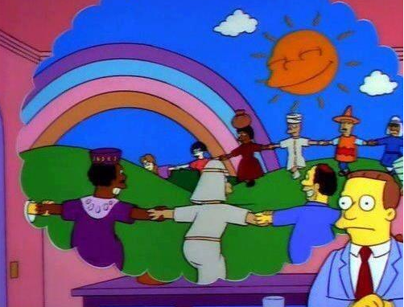

Santos Gallegos
<santos_g@outlook.com>
@stsewd
¿Te imaginas un mundo donde personas de todos los rincones se junten para hacer grandes cosas para el beneficio de todos sin esperar nada a cambio?
Es un software que es distribiudo de tal manera que el usuario tenga la libertad de usarlo para cualquier propósito, estudiarlo, cambiarlo y re-distribuirlo.
No es una cuestión de dinero, sino de libertad.